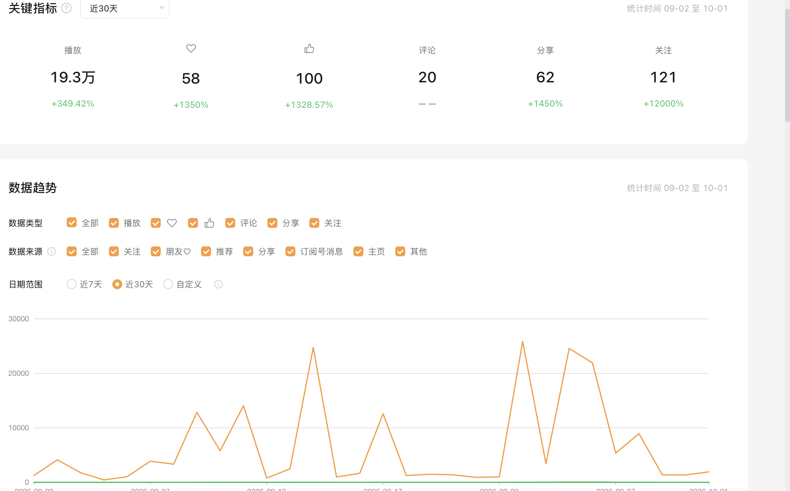
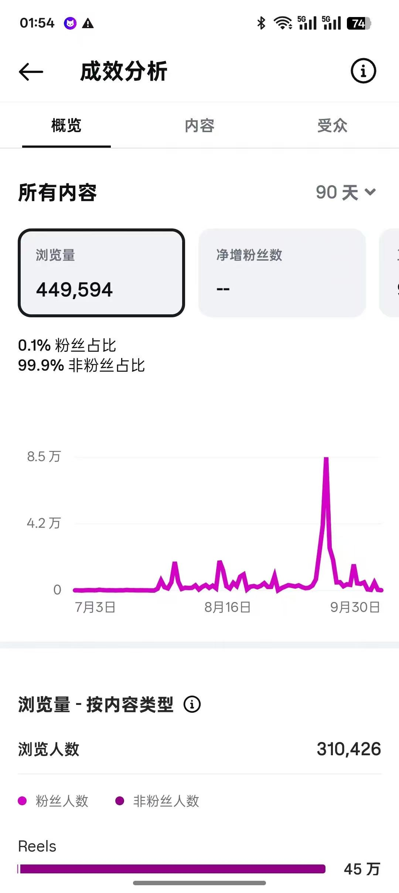
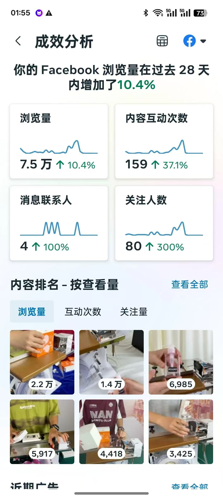
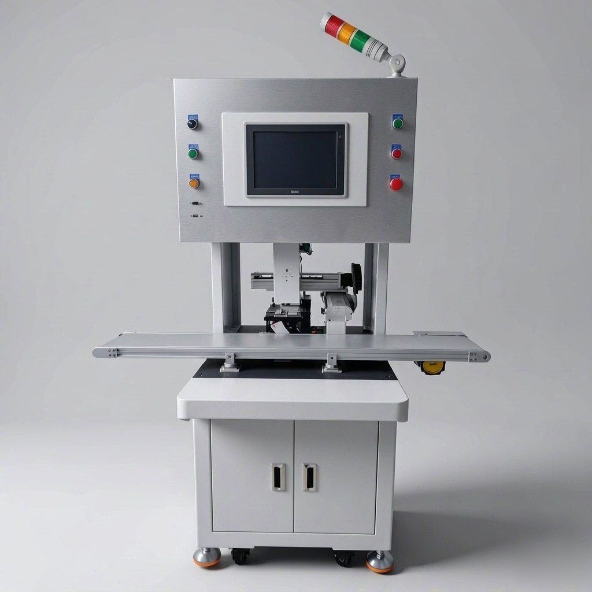
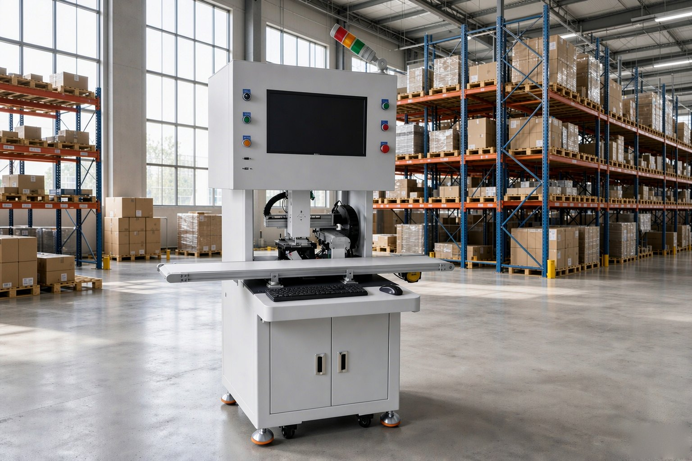
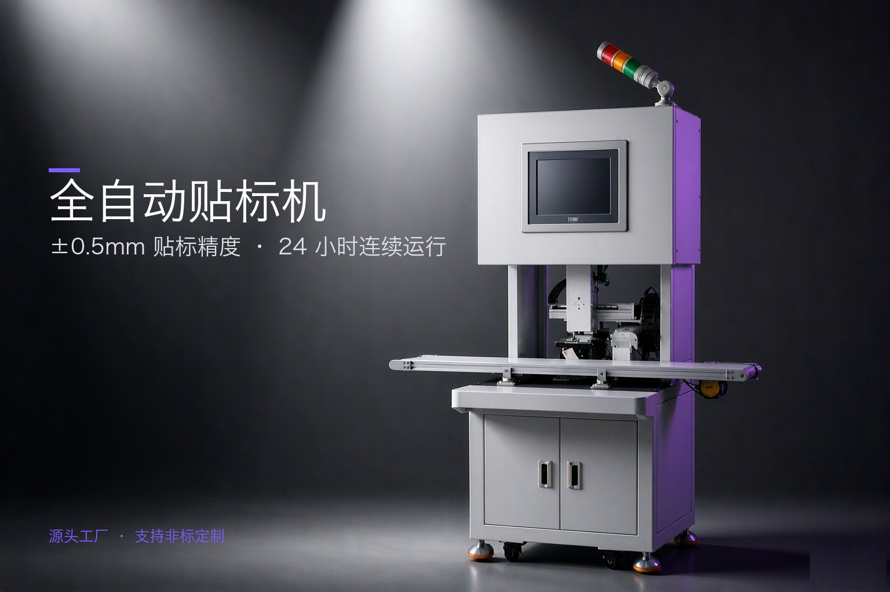
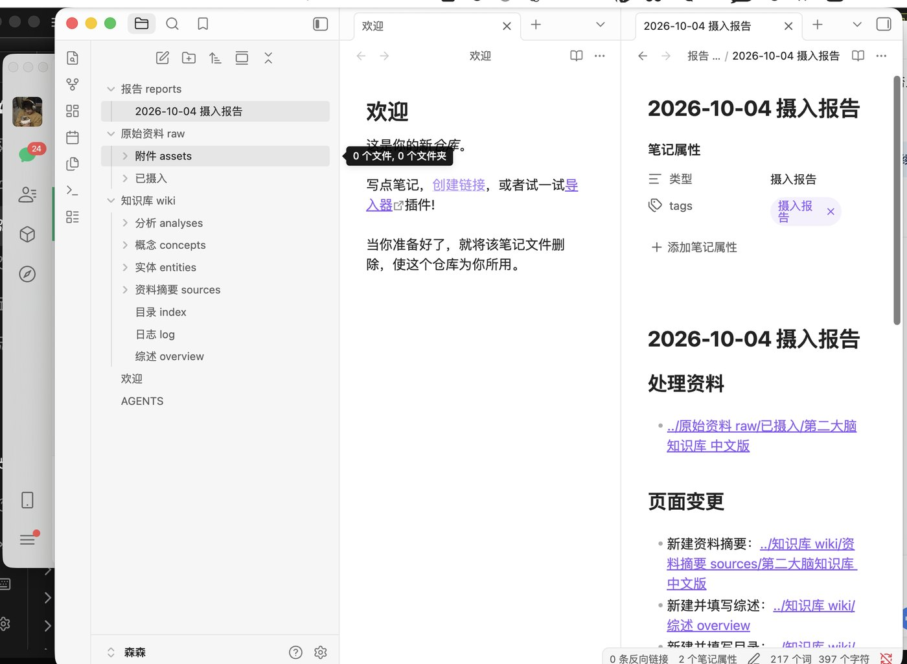

90 天浏览量
非粉丝推荐流量 99.9%
01 / 个人简介ABOUT
你好，我是张凌森。
AI 内容运营与跨境电商运营从业者，擅长搭建从选题、脚本、AI 生成、剪辑到分发的内容流水线。我也有直播中控、摄影制作与建筑设计背景，习惯从用户、画面和数据多个角度解决问题。
02 / 运营成果SELECTED METRICS
5 个账号单月播放
单月发布 61 条产品内容
「高速剥标机快速贴标」
占该账号月播放量 64%
浏览量增长 10.4%
关注增长 300%
数据来自简历与作品集提供的各平台后台统计口径。
03 / 代表项目SELECTED WORKS · 04
内容增长，
从系统开始。.
从稳定生产，到找到有效内容，
再将结果规模化复用。
04 / 国内账号矩阵CONTENT OPERATIONS
让有效内容
持续发生。
独立运营抖音 2 个、视频号 3 个垂类账号，围绕产品卖点制作内容，并根据封面点击率、完播率和互动数据迭代主题与开场。
61单月内容产出
39 万矩阵累计播放
43.78%封面点击率
72.75%5 秒完播率

内容示例与后台截图来自个人作品集所列案例；不同账号的统计周期不同。
05 / 跨境社媒GLOBAL CONTENT
用本地化内容
打开海外触达。
运营 Facebook 与 Instagram 海外账号，结合英文脚本、平台规格和短视频内容节奏，持续测试创意并用后台数据复盘。


06 / AI 内容流水线WORKFLOW
把重复工作
交给工作流。
使用 Codex、WorkBuddy、即梦与 ComfyUI 进行多模型编排，沉淀可复用的自动化能力，支撑国内矩阵和海外社媒内容日更。
01选题采集
02脚本生成
03AI 出图 / 视频
04自动剪辑
05多平台分发
实机演示 · 自动化内容工作流
从热点选题到复盘导出
录屏展示选题、文案与封面生成、爆款拆解、数据复盘和线索登记等模块，形成可重复运行的内容生产闭环。
创意混剪 · 视觉贴标机四版 同一产品 4 个创意方向，并行测试选出最优脚本
开头 3 秒直接给结果：双摄识别 → 精准贴合，用成品画面替代口播铺垫。
打「降本」心智：外包贴标 → 自有设备，对准中小厂的成本焦虑。
情绪钩子：贴歪返工 → 视觉纠偏，先制造麻烦再给解法。
卡点剪辑，突出速度与精度，节奏最紧、完播最高的一版。
跨境英文素材 · 海外版 面向海外买家，英文标题 + 痛点前置，用于 Facebook / Instagram / TikTok
人工贴标痛点：效率低、不一致，直击海外小厂手工产线。
贴歪返工痛点，主打精度卖点，配英文标题卡。
动作好奇型：机械动作本身做钩子，适合冷启动涨粉。
矩阵批剪 · 中英双语 同一批素材批量产出中/英双版本，单日可出 10+ 条
模板化批量剪辑产物，统一片头 / 字幕 / 节奏结构。
换素材不换结构，用于 5 个账号同题分发。
批剪管线直出英文标题版，免二次翻译，直接投海外。
与中文版同源，双语素材一次成型。
AI 生成分镜 · 设备交付场景 实拍覆盖不到的大场面，用 AI 视频生成补齐
集装箱开门、橙色坡道落地，展示出货交付环节。
黄吊带天车吊运、工人扶稳，工厂重型感画面。
两排数十台设备阵列，体量感镜头，实拍成本极高。
薄雾冷调、设备列队装车，用于品牌片头氛围。
千川投放素材 · 电商带货 竖版 9:16 / 1080×1920 / 60fps，覆盖「种草 → 讲解 → 憋单 → 售后」完整链路
开场用「家人们谁懂啊」口语钩子替代产品露出，前 3 秒先建情绪、再上产品，降低广告感。
本组时长最长的一版：把产品放进起居动线，靠场景质感拉高完播，适合种草蓄水而非直接转化。
开口即结论，字幕打「5 倍强吸水」标版承接；结构为「踩坑对比 → 亮出标准 → 给方案」。
「我有 3 不卖」反向结构制造稀缺感，结尾落「点击左上角直播间」，是标准千川引流脚本。
步骤拆解「正确使用方法」，用于详情页说明与直播间答疑，降低退货与咨询成本。
AI 生成 · 品牌仪式与客户场景 即梦 AI 文生视频 / 单条 4s / 竖版 9:16，补齐实拍成本极高的「揭幕仪式 · 海外客户群像」场面
外籍客户到厂观摩设备实操，技术员现场演示贴标流程、客户点头认可。用于 B 端信任背书与外贸询盘转化。
红布揭幕 + 团队鼓掌，车间发布仪式感镜头，用于新品上线的品牌片头与朋友圈预热。
中外团队同场见证设备揭幕，营造海外订单交付现场感，补齐实拍拿不到的群像镜头。
07 / 直播中控与内容制作LIVE OPERATIONS
现场稳定，
节奏有据。
独立承担 30 场电商与本地生活直播全流程中控，负责设备调试、多机位切换、直播画面与话术节奏配合、数据监控和突发处理。
30 场直播全流程中控
+40%场均在线人数提升
+50%互动评论量增长
3 小时场均直播时长
内容制作 · 产品实拍剪辑
从拍摄现场到平台成片
具备产品、静物与人物拍摄经验，熟悉手机与大疆设备，使用剪映剪辑并适配多平台内容规格。
08 / AI 视觉与知识库VISUAL OUTPUT
从产品图，
到知识资产。
用 AI 生成产品主图、海外场景图与广告成品，并搭建可持续积累选题资料的知识库，让视觉内容和素材管理都能进入工作流。




09 / 经历与能力EXPERIENCE
跨过不同领域，
保持创造力。
内容、直播、影像与空间设计的经历，让我既能拆解传播目标，也能亲自完成从脚本到画面的落地。
AI 内容矩阵运营
内容运营 · AI 工作流搭建
- 运营 5 个垂类账号，单月产出 61 条，累计播放 39 万。
- 搭建选题、脚本、AI 生成、自动剪辑与多平台分发流水线。
- 跟踪完播率与封面点击率，持续优化主题和内容开场。
电商直播 / 本地生活直播
直播中控 · 技术负责人
- 独立承担 30 场直播全流程中控，场均时长约 3 小时。
- 场均在线人数从约 120 人提升至 168 人，互动评论量增长 50%。
北京祝景工程设计咨询有限公司
助理建筑师
- 参与方案图纸与模型制作，负责 2 个小型项目平面深化。
- 提出的 3 处空间优化建议被采纳，参与 2 个商业项目施工图辅助设计。
北京逢片必交影视传媒有限公司
摄影助理
- 参与 5 个商业拍摄项目，负责场景规划、灯光与设备调试。
- 独立完成 200 余张照片的色彩校正和细节优化。
教育背景
宁波大学科学技术学院 建筑学 · 本科 2021.09 — 2026.06
专业排名前 10% · 三等奖学金
01↗
AI 工具与工作流
Codex · WorkBuddy · 即梦 · ComfyUI · 自动剪辑 · 可复用 Skill
02↗
内容生产与拍摄
选题策划 · 分镜脚本 · 产品 / 静物 / 人物拍摄 · 剪映 · 多平台适配
03↗
直播与数据运营
推流软件 · 多机位切换 · 在线与转化监控 · 直播复盘 · 话术节奏优化
04↗
跨境电商与视觉工具
Facebook · Instagram · TikTok 内容规格 · SketchUp · AutoCAD · Office
10 / 联系我CONTACT
期待新的机会与合作。
一起做好内容.
598850719@qq.com ↗随时到岗 · 宁波